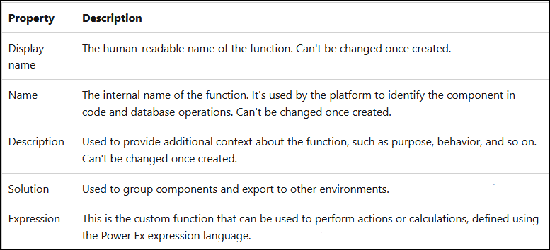
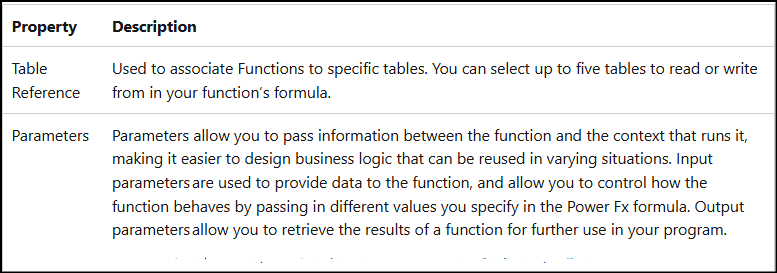
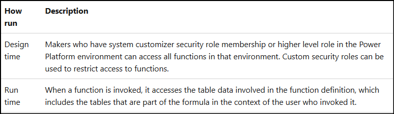
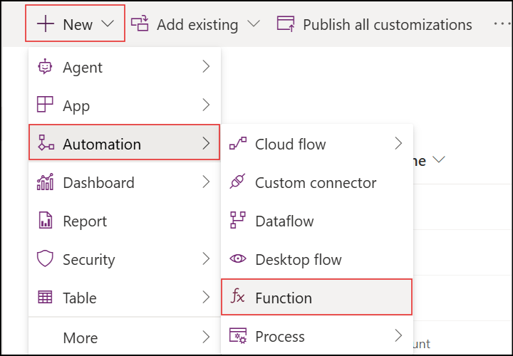
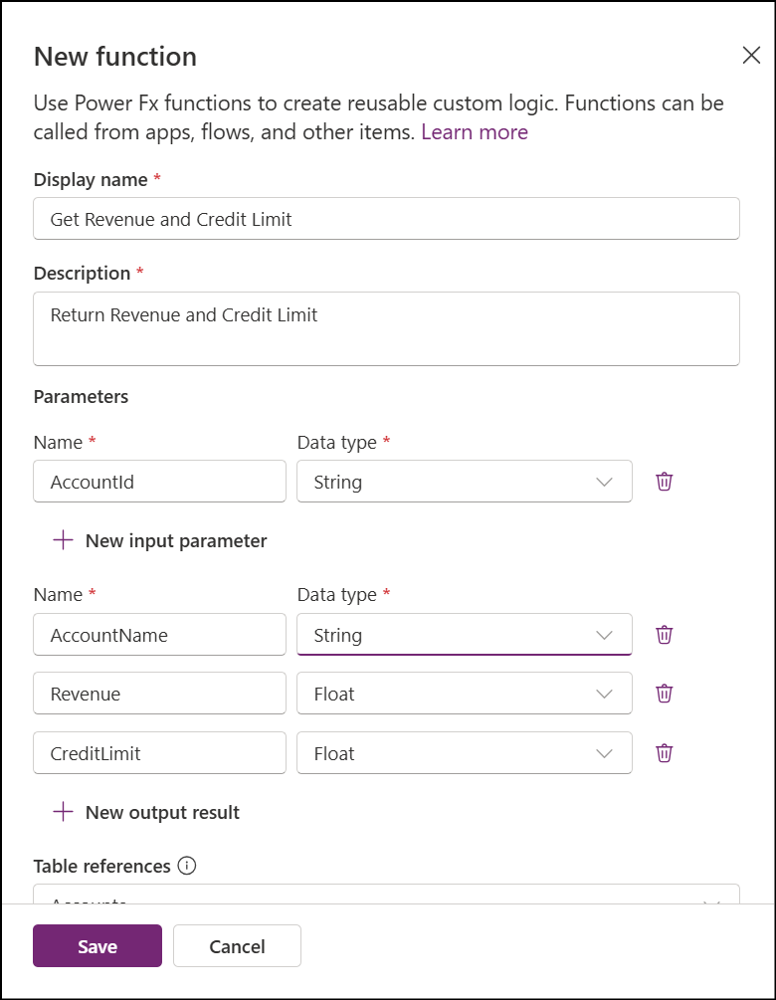
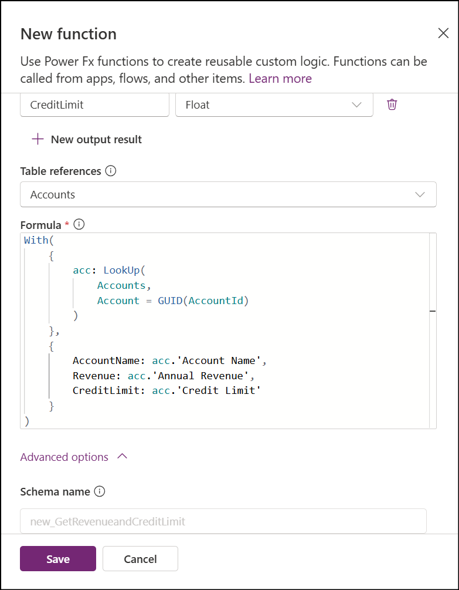

As the traditional plugin process for executing server-side business logic is quite complex and time-consuming, developers need to create a Plugin as a custom class, compile it into a .NET Framework assembly, and then register the assembly using the Plugin Registration Tool in Dataverse.
Although plugins provide powerful customization capabilities, the overall development and deployment process requires coding expertise and additional effort. We also have Dataverse Actions, where custom business logic can be implemented and invoked using Client Scripts, Power Automate Flows, or Plugins. However, this approach still involves development effort and technical knowledge.
Until recently, plugins were the primary supported approach for implementing server-side business logic. This is where Dataverse Functions come into the picture, offering a simpler approach with minimal code and easier execution.
Functions in Dataverse are executable commands and reusable solution objects in which business logic can be written using Power Fx. Power Fx is a general-purpose, strongly typed, declarative, and functional programming language.
Note: Dataverse Functions were formerly known as Instant Plugins or Low-Code Plugins. As Low-Code Plugins have been marked as deprioritized, Functions are the newer version of that capability and are currently available in preview.
Functions are stored within the Dataverse database, making them easy to integrate with Power Apps and Power Automate. Since they are built using the Power Fx expression language, makers can create complex business logic with minimal coding knowledge. Functions can also connect directly to Dataverse and external data sources through supported connectors.
Functions support input and output parameters, can be invoked manually, and support both Global and Table scopes.
Server-side logic provides several benefits, including:
- Security: Logic is executed on the server, helping prevent unauthorized access and manipulation.
- Performance: Processing occurs closer to the data source, reducing data transfer between the client and server.
- Reliability: Ensures that business logic is consistently applied across all clients, minimizing errors and inconsistencies.
- Maintenance: Since the logic is centralized and stored on the server, it is easier to maintain and update.
Properties of Functions

As Functions are manually invokable and custom coded, they support parameters with the following data types:
- String
- Integer
- Float
- DateTime
- Decimal
- Boolean
Below are the unique properties of these parameters.

Access Permissions for Functions
Below are the access permissions available for Functions.

Creating a Function
Now that we understand what a Function is, let’s look at how to create and use it in apps and flows.
To create a Function in Power Platform, the user must have the System Customizer security role in the Power Platform environment.
Follow the steps below:

- Navigate to the preferred Solution → Objects → Automation → Function.
- A side pane will open, prompting you to enter the Display Name and Description for the Function.

- Add the required Input and Output Parameters along with their names and data types.

- Optionally, select table references from the supported list of Dataverse tables. These references can be used to access data through functions such as Filter() and LookUp().
- Enter the Power Fx expression in the Formula field.
- Save and publish the Function.
- For example, I have created a function to get the revenue and credit limit by passing the account id as parameter.
Debugging Using the Trace() Function
To debug a Function using the Trace() function, ensure that plug-in and custom workflow activity tracking is enabled.
- Go to Power Apps (
make.powerapps.com). - Select the Settings gear icon in the upper-right corner and choose Advanced Settings.
- Navigate to Settings → Auditing → Global Audit Settings.
- On the Customization tab, ensure that Enable logging to plug-in trace log is set to All.
Invoking Functions Across Different Platforms
Canvas App:
You can call your function with parameter like below
Environment.new_GetRevenueandCreditLimit(
{
AccountId: a1837caf-84a4-4627-a0c6-8b8dc2fc7dc8
}
);
Power Automate Cloud Flow
- In a cloud flow, add a new action from the Microsoft Dataverse connector.
- Select the action called Perform an unbound action.
- Select your Function. The Function will appear with its unique schema name and prefix.
- Provide values for all required input parameters.
Dataverse Web API
Functions can also be invoked from the Dataverse Web API, making them accessible from external applications and integrations.
POST [Organization URI]/api/data/v9.1/myapi_CustomUnboundAPI
OData-MaxVersion: 4.0
OData-Version: 4.0
Content-Type: application/json; charset=utf-8
{
"AccountId": "a1837caf-84a4-4627-a0c6-8b8dc2fc7dc8"
}
Limitations of Dataverse Functions
Dataverse Functions currently support only the list of Power Fx functions documented in Microsoft Learn. Before implementing Functions in production scenarios, it is recommended to review the latest supported functions and limitations in the official Microsoft documentation.
References:
- Functions in Microsoft Dataverse - Power Apps - Microsoft Learn
- Create and use functions in Microsoft Dataverse - Power Apps - Microsoft Learn
- Invoke a function using Power Platform - Power Apps - Microsoft Learn
- Example functions in Microsoft Dataverse - Power Apps - Microsoft Learn
- Supported functions in Microsoft Dataverse - Power Apps - Microsoft Learn
- Streamline app development with low-code plug-ins in Microsoft Dataverse - Power Apps - Microsoft Learn

Comments